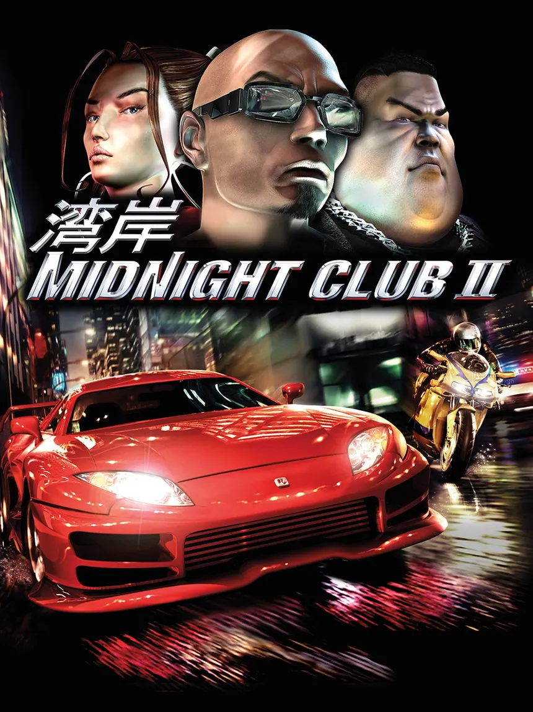
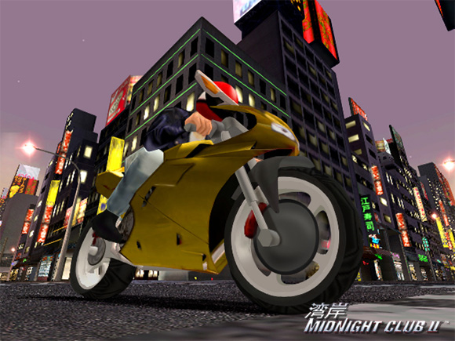
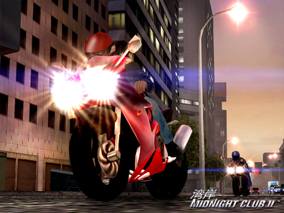
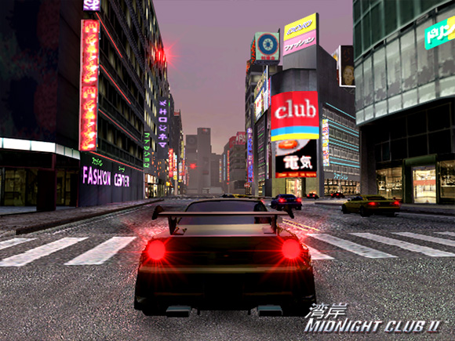
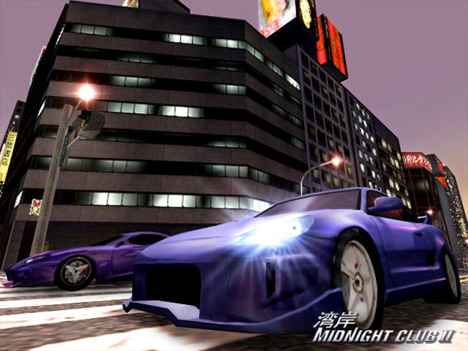

Midnight Club 2

Descripción
Midnight Club II nos lleva al mundo de las carreras callejeras ilegales, donde los conductores más temerarios se reúnen por las noches para competir y hacerse un nombre.
El juego cuenta con tres ciudades inspiradas en lugares reales: Los Ángeles, París y Tokio. Podremos recorrerlas libremente utilizando una gran variedad de coches y, como novedad respecto a la primera entrega, también motocicletas.
Las carreras no siguen circuitos cerrados, por lo que tendremos libertad para elegir nuestras propias rutas, aprovechar los atajos y buscar la forma más rápida de dejar atrás a nuestros rivales. ¡Aquí no hay reglas, solo importa llegar primero!
Capturas del videojuego




Información del videojuego
| Desarrollador | Plataforma | Fecha de lanzamiento |
|---|---|---|
| Rockstar San Diego | PC, PS2, Xbox | 8 de abril de 2003 |